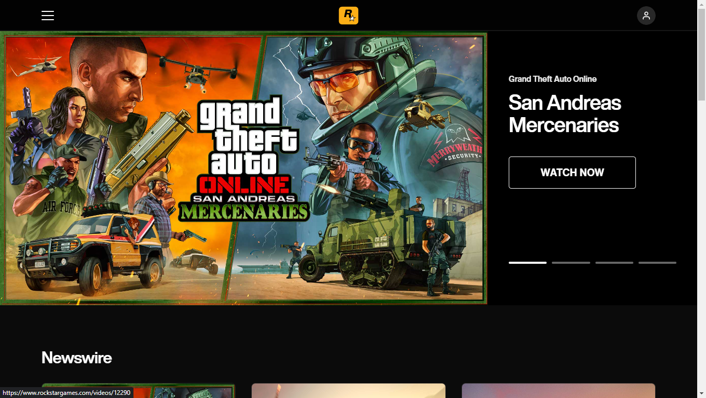
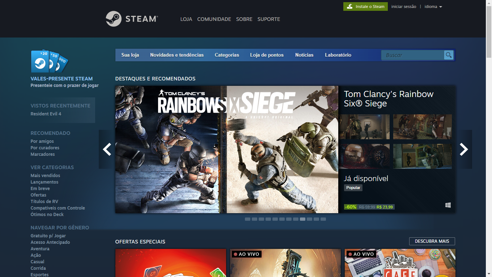
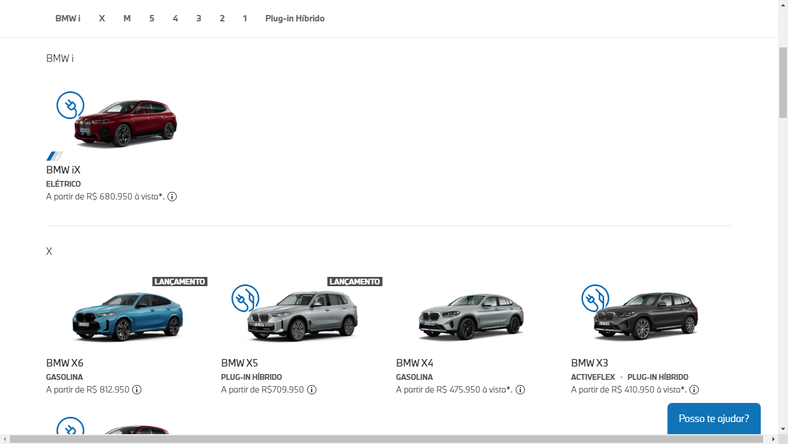

Em todo o tempo que trabalho com programação, fui chamado para atuar em áreas de sites de empresas altamente conhecidas e multi-biliónarias.
Trabalhei com a Rockstar Games. Atuei na última re-estilização do site, e o carrossel da página principal foi inteiramente feito por mim.

Exigências:
- Visual bem clean e leve.
- Atualizações diárias.
- Leve e prático.

Com a Valve, trabalhei na página principal de uma das maiores lojas de games do mundo, a Steam. Toda a parte de layout/design dessa parte do site, foi feito por mim.

Exigências:
- Priorizar games em promoção na primeira linha do carrossel.
- Diversos tons de azul para dar uma impressão de sombreamento.
- Menu principal no topo da página que levam as principais sessões da Steam.
- Menu lateral que separam-os por categoria e gênero.

Uma das maiores empresas de automóveis de luxo, BMW, recebeu muitas críticas quando atuava com seu antigo site, principalmente na parte do configurador. Estilizei e otimizei a página, para que não ocorressem bugs quando visto por uma tela menor e que não desse muito trabalho para hardwares mais simples (constantes travamentos eram frequêntes).

Exigências:
- Veículos separados por série e modelos.
- Preço inicial de cada modelo deveria ser exibido junto ao próprio.
- Menu principal no topo da página que levam as respectivas séries.
- Opção de filtrar carros elétricos e híbridos.

Uma das montadoras mais famosas do mundo, a Volkswagen, também já teve diversas críticas negativas sobre o seu site, principalmente de como era difícil e confuso de encontrar funções e informações. Na última re-estilização do site, entrei em ação refazendo por completo a guia de menus, deixando as informações limpas e claras.
Exigências:
- Ter caminhos para todas as funções do site.
- Sub-menus dentro dos menus principais.
- Botão para ofertas.
- Rodapé personalizado.

A marca de calçados mais famosa do mundo, a Nike, sempre teve um estilo mais jovial quando se trata de marketing, e no próprio site não seria diferente. Sempre fez bastante sucesso quando se trata de propagandas e não recebeu muitas críticas negativas quanto ao site, mas é sempre bom estar mudando para não ficar algo enjoativo. O que planejei nesse site, foi algo bem simples, mas que deu uma praticidade bem grande e manteve o visual clean. Re-estilizei o menu principal e separei as categorias, também abaixo dele, projetei um carrossel que mostra informações relevantes para aquele momento.
Exigências:
- Ter todas as categorias separadas principalmente por feminino e masculino.
- Ser feito em tons menos coloridos como cinza, branco e preto.
- Possuir uma barra de pesquisa.
- Carrossel com informações relevantes para época que está sendo acessado.
Tecnologias Utilizadas
HTML5 - Resumo, Prós/Contras
O HTML5 (Hypertext Markup Language) é a versão mais recente da linguagem de marcação padrão da web. É amplamente utilizado para estruturar e apresentar o conteúdo na Internet.
Prós:
- Versatilidade e suporte a recursos avançados.
- Maior acessibilidade e semântica.
- Compatibilidade com dispositivos móveis.
Contras:
- Compatibilidade com navegadores mais antigos.
- Curva de aprendizado para recursos avançados.
- Possíveis problemas de segurança se mal utilizado.
Grandes projetos que utilizam HTML5:
- YouTube
- Netflix
- Amazon
CSS - Resumo, Prós/Contras
O CSS (Cascading Style Sheets) é uma linguagem de estilo utilizada para controlar a aparência e o layout dos elementos em um documento HTML. Ele desempenha um papel fundamental na criação de um design atraente e responsivo para sites.
Prós:
- Permite a separação entre a estrutura (HTML) e a apresentação (CSS) do site.
- Oferece uma ampla gama de opções de estilização e personalização.
- Facilita a manutenção e a reutilização do código.
Contras:
- Curva de aprendizado inicial para dominar os conceitos mais avançados.
- Compatibilidade entre navegadores pode ser um desafio em casos mais complexos.
- Gerenciamento de estilos em projetos grandes pode exigir estratégias adicionais.
Grandes projetos que utilizam CSS:
- Bootstrap
- Materialize CSS
- Tailwind CSS
- WordPress
- GitHub
JavaScript - Resumo, Prós/Contras
JavaScript é uma linguagem de programação de alto nível e interpretada, amplamente utilizada no desenvolvimento web. Ele permite a criação de interações dinâmicas e funcionais nos sites, tornando-os mais interativos e responsivos.
Prós:
- Ampla compatibilidade com navegadores e plataformas.
- Facilidade de integração com outras tecnologias web.
- Possibilidade de desenvolver aplicativos web avançados e ricos em recursos.
Contras:
- Gerenciamento de dependências pode ser complexo em projetos grandes.
- Possibilidade de erros e problemas de segurança se não utilizado corretamente.
- Curva de aprendizado para dominar conceitos mais avançados, como manipulação do DOM.
Grandes projetos que utilizam JavaScript:
- Google Maps
- Netflix
- Spotify